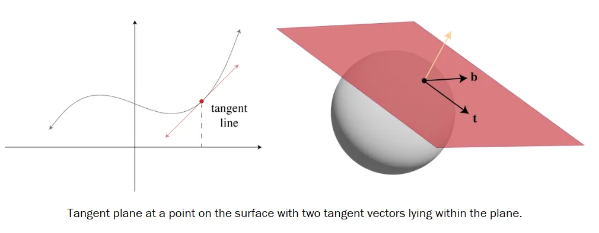
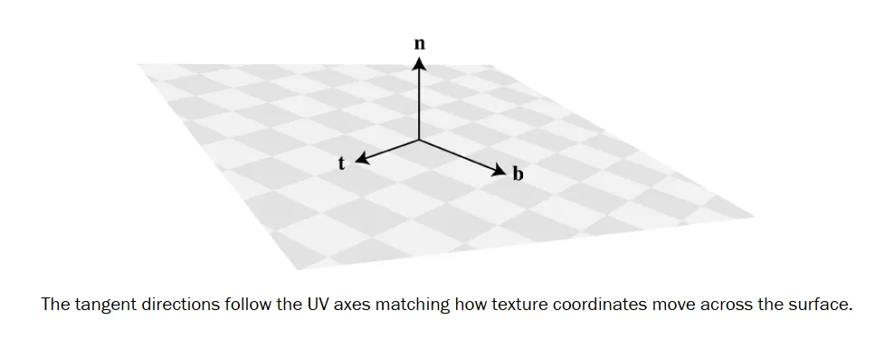
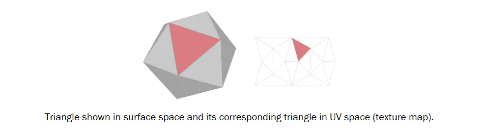
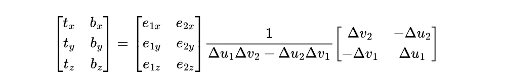
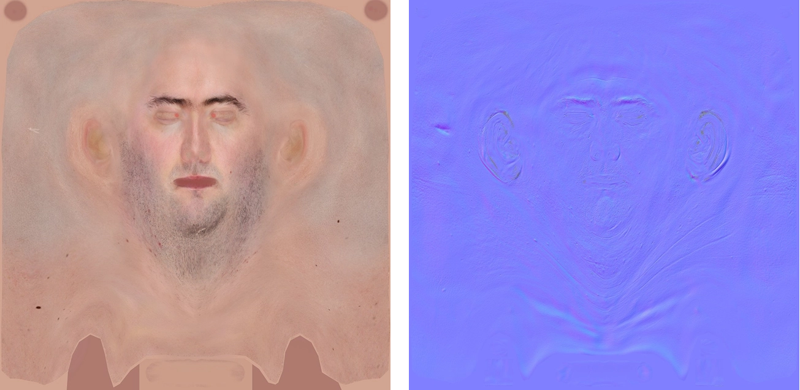

RealTime-Rendering27-The Geometry Behind Normal Maps
The Geometry Behind Normal Maps
切线空间是什么，它到底为什么存在？
切线空间并非一种渲染技巧。它是一个在任何带有参数化表示的曲面上都会出现的几何结构。我只是之前没有把这些点联系起来。
当我们用 UV 坐标来定义切线空间时，它就成为了连接纹理坐标的平面世界与3 曲面的弯曲世界之间的桥梁。一旦你看到了这种联系，法线贴图的原理就豁然开朗了。
在这篇文章中，我将把切线空间拆解开来，逐一分析：它到底是什么，它是如何从 UV 中产生的，它是如何计算的，以及它如何构成法线贴图和其他依赖于局部表面朝向的技术的基础。
切线空间的构成
切线空间并非一个全局坐标系。它是一个在曲面上每一个独立点建立的局部框架。每个点都有自己的“小世界”，一块由曲面自身定义的微小几何区域。切平面是这个世界的基石：一个捕捉了曲面局部行为的平面近似，切线空间也因此得名。
光滑曲面上的每一个点都有一个由其法向量定义的切平面。我们在二维中也能看到类似的概念：要找到曲线上某点的法线，我们先找到其切线，然后旋转九十度。切平面就是这种关系在三维中的版本。

位于这个平面上的向量被称为切向量。我们可以在该平面内选取两个彼此垂直的方向，它们与法线一起构成一个标准正交基：一个位于曲面上的局部坐标框架，我们称之为切线空间。
切线空间使我们能够表达相对于曲面本身（而非世界坐标系）的方向、导数和变换。这一点至关重要，因为大多数着色计算都依赖于局部定义的方向：例如光线照射到表面、纹理带来的法线扰动，或者各向异性的方向。
但在我们能够使用它之前，我们需要决定如何定向这个局部框架。为此，我们通常会借助曲面的 UV。
UV如何定义朝向
当人们在计算机图形学的语境中提到“切线空间”时，他们几乎总是指一个由 UV 参数化导出的、具有特定朝向的切线框架。
UV 贴图为曲面上的每一个点赋予了一对二维坐标。这些坐标定义了纹理如何被贴上去，但它们还有一个更微妙的用途：它们告诉我们，在二维纹理空间中的移动是如何转化为沿着曲面表面的三维移动的。
你可以把 UV 想象成覆盖在mesh上的一个坐标网格。沿着 U 方向移动意味着沿着该网格的一个轴滑动，而沿着 V 方向移动则意味着沿着另一个轴滑动。这些移动对应于曲面上真实的三维方向，而这些方向正是定义了切线空间实际朝向的东西。

纹理坐标与曲面几何之间的这种联系，正是切线空间如此有用的原因：它将表面的局部框架与着色器可以采样的内容锚定在一起。构建这个框架的数学方法直接源于这种关系。
构建切线空间
定义切线框架朝向的切向量被称为切线（Tangent） 和副切线（Bitangent），它们描述了纹理坐标是如何在曲面上移动的。这些向量与法线一起共同构成了TBN矩阵，该矩阵可将任何以切线空间表示的向量（例如法线贴图中的法线）转换为该点处表面的坐标系。
假设法线已知，我们需要找到切向量 T 和副切线 B 来完成矩阵的构建。唯一能将纹理空间与曲面空间联系起来的数据就是 UV 坐标。如果我们拥有这些坐标，就可以说Mesh上的每个三角形都同时存在于两个空间中：曲面空间和 UV 空间。这两个版本描述的是同一个区域，只是用不同的坐标来表达。而这种关系恰恰定义了我们正在寻找的方向。

寻找一个能将纹理空间中的方向映射到曲面上对应方向的变换，正是求解切向量的意义所在。这个变换可以用一个3×2的矩阵来表示，其列向量即为$\vec{T}$和$\vec{B}$，它们描述了当 u 或 v 变化一个单位时，在曲面上的移动方向。
我们可以从单个三角形的一条边入手来定义这种关系。考虑一个由三维空间中的三个点$P_0,P_1,P_2$ 定义的三角形，以及它们对应的纹理坐标$(u_0,v_0),(u_1,v_1),(u_2,v_2)$。我们可以计算出该三角形在曲面空间中的一条边，以及它在纹理空间中对应的边：
这两条边描述了三角形的同一部分。我们可以用以下方程来表达纹理空间中的边是如何映射到其曲面空间对应部分的：
在这个方程中，矩阵$[TB]$代表了一个线性变换，它将纹理空间中的边映射到曲面空间。该矩阵的列向量正是定义切线空间朝向的切向量，它们与法线共同构成了切线空间的正交基。
然而，仅凭一对边还不足以求出这些向量。我们需要另一对具有相同朝向的边来建立足够的方程。
我们可以沿用第一对边的相同模式来计算$E_2$和其对应的纹理坐标差 $Δu_2,Δv_2$，并将所有信息整合成一个矩阵方程：
这种形式同时捕捉了两条边的信息，为我们提供了足够的条件，通过将等式两边乘以 UV 矩阵的逆矩阵，即可解出切向量$\vec{T}$和$\vec{B}$：

由此我们便得到了构建$3×3$矩阵所需的切向量，但在完成切线框架之前，还有一步工作需要完成。
切向量并不能保证彼此垂直。UV 贴图很少是均匀的。将弯曲的表面展开到平面上会引入拉伸和压缩，这可能导致切向量略微偏离法线方向。
为了实现稳定的光照，我们需要一个标准正交基：所有三个轴必须互相垂直且为单位长度。假设 UV 映射在局部是连续且平滑的，这些偏差通常很小，可以通过使用Gram–Schmidt process对切线框架进行正交化来修正。这确保了切线与法线保持垂直并归一化：
由于法线是单位向量，我们可以通过点积$\vec{N}⋅\vec{T}$将切向量投影到法线上。这便得到了$\vec{T}$中沿着法线方向的分量。通过从$\vec{T}$中减去该投影分量，我们便移除了切向量中不在曲面内的部分，使其成为纯粹的切向方向。随后，我们对副切线应用相同的过程，移除其沿着法线和修正后切线的分量。
最后，我们对这两个切向量进行归一化。它们与法线共同构成了一个标准正交基，从而定义了切线框架。将这些向量组合在一起，便构成了$3×3$的切线空间矩阵：
在实时渲染中为每个多边形构建并存储完整的$TBN$矩阵是不现实的，而且也没有必要同时存储两个切向量。典型的做法是在资产导入或Mesh预处理阶段，为每个顶点计算一次切线$\vec{t}$和手性符号（handedness sign），并将它们作为一个$vec4$顶点属性存储。其中$xyz$分量存储切线方向，$w$分量存储符号。然后在渲染时，我们按如下方式重建副切线：
之所以需要符号，是因为当 UV 发生水平或垂直翻转时，切线空间的其中一个轴会反向。此时切线框架的手性发生反转，$TBN$矩阵的行列式变为负数。因此，计算符号等价于求该矩阵的行列式的符号。我们可以通过三重标量积来计算$3×3$矩阵的行列式：
从切线空间到法线贴图
法线贴图与纹理贴图共享的不仅仅是一种存储和检索机制。它们解决的是同一个问题。实时Mesh之所以是低分辨率的，是因为每个顶点都会增加开销，而更少的顶点意味着更少的几何细节。
如果我们能负担得起为每个像素都分配一个多边形，那就根本不需要法线贴图。但我们做不到，所以我们选择“取巧”。纹理让片段着色器能够访问我们无法逐顶点存储的数据。在法线贴图中，这些数据就是表面朝向。
法线贴图将这些朝向以颜色的形式存储。每个纹素使用其$RGB$通道编码一个法线向量，分别映射到$XYZ$ 轴。蓝色通道占主导地位，因为大多数法线大致指向表面外部。正因如此，法线贴图通常呈现偏蓝色调。

这些逐像素的法线会替换掉插值得到的顶点法线，使得光照能够响应Mesh中并不存在的精细细节。
法线贴图中的每个纹素代表一个局部空间中的向量。我们有时会说每个纹素存储了一个切线空间中的向量，就像我们说表面位置在局部空间（模型空间）中一样。这个名称定义了这些数值所参照的坐标系。在上一节中，我们推导出了将法线数据转换到这个坐标系的函数：即$TBN$矩阵。
假设切线和手性符号作为顶点属性存储，我们便可以在着色器中重建$TBN$矩阵：
1 | in vec3 a_Normal; |
切线向量通过模型视图矩阵进行变换。有些资料说应该用法线的变换矩阵，但这是不正确的。切线位于表面上，而法线垂直于表面，因此两者必须用不同的方式变换。
变换后的切线在大多数情况下都能正常工作，但在非均匀缩放下，它可能会引入轻微的角偏移。实践中这通常可以忽略不计，但如果对精度有要求，可以在计算副切线之前，将切线与法线重新正交化。
一旦我们在着色器中重建了$TBN$矩阵，我们就可以用它来转换从法线贴图中采样的法线方向。这个过程将存储在纹理中的局部方向（切线空间）转换为世界空间中可供光照计算使用的方向。
法线贴图将方向存储为$RGB$颜色，取值范围为[0,1]。在使用之前，我们需要先将其从颜色空间映射回向量空间：
1 | in mat3 v_TBN; |